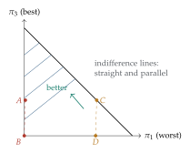

2.3. Expected utility#
2.3.1. The expected utility theorem#
To keep the proof transparent we assume that some outcome is best and some worst. With finitely many outcomes and complete, transitive preferences this is automatic: let \(\bar x\) and \(\underline x\) be outcomes with \(\delta_{\bar x}\succsim\delta_x\succsim\delta_{\underline x}\) for all \(x\). We also assume \(\delta_{\bar x}\succ\delta_{\underline x}\) (otherwise, as the proof shows, the decision maker is indifferent among all lotteries and any constant \(u\) works).
Theorem 2.1 (Expected utility; von Neumann and Morgenstern 1944)
A preference \(\succsim\) on \(\Pi_X\) satisfies completeness, transitivity, continuity and independence if and only if there is a function \(u:X\to\R\) such that
The function \(u\) is the von Neumann–Morgenstern (vNM) utility. It is defined on outcomes. The function \(U(\pi)=\sum_x\pi_xu(x)\) is the expected utility, defined on lotteries.
Proof strategy (Theorem 2.1)
The hard direction is “axioms \(\Rightarrow\) representation”. The idea is to build a ruler. Take the best and worst outcomes and form the mixtures \(\alpha\delta_{\bar x}+(1-\alpha)\delta_{\underline x}\), “the best with probability \(\alpha\)”. Independence shows that a higher \(\alpha\) is better. Continuity shows that every lottery is exactly as good as one point on this ruler. Its position \(\alpha\) is a utility number for that lottery. We then show (independence again) that this number is linear in probabilities (T1), and a linear function of probabilities is an expected utility.
Proof of Theorem 2.1
Representation \(\Rightarrow\) axioms. If \(U(\pi)=\sum_x\pi_xu(x)\) represents \(\succsim\), completeness and transitivity hold because \(\ge\) on real numbers is complete and transitive. Since \(U\) is linear, \(U(w\pi+(1-w)\varphi)-U(w\rho+(1-w)\varphi)=w\,[U(\pi)-U(\rho)]\), which has the sign of \(U(\pi)-U(\rho)\) when \(w>0\): independence. If \(U(\pi)>U(\rho)>U(\varphi)\), then \(\alpha=\frac{U(\rho)-U(\varphi)}{U(\pi)-U(\varphi)}\in(0,1)\) gives \(U(\alpha\pi+(1-\alpha)\varphi)=U(\rho)\): continuity.
Axioms \(\Rightarrow\) representation. Write \(L_\alpha\coloneqq\alpha\delta_{\bar x}+(1-\alpha)\delta_{\underline x}\).
Step 1: mixing with something worse makes things worse. If \(\pi\succ\rho\) and \(w\in(0,1)\), then \(\pi\succ w\pi+(1-w)\rho\succ\rho\). Indeed, apply independence to \(\pi\succ\rho\) with weight \(1-w\) and mixing lottery \(\pi\): \((1-w)\pi+w\pi\succ(1-w)\rho+w\pi\), that is, \(\pi\succ w\pi+(1-w)\rho\). Applying it with weight \(w\) and mixing lottery \(\rho\) gives \(w\pi+(1-w)\rho\succ w\rho+(1-w)\rho=\rho\).
Why this step?
Independence is stated with “\(\succsim\)”; its contrapositive gives the strict version, since \(\pi\succ\rho\) means \(\rho\not\succsim\pi\).
Step 2: the ruler is monotone. If \(1\ge\alpha>\beta\ge0\) then \(L_\alpha\succ L_\beta\). Write \(L_\beta\) as a mixture of \(L_\alpha\) and \(\delta_{\underline x}\): \(L_\beta=\frac\beta\alpha L_\alpha +(1-\frac\beta\alpha)\delta_{\underline x}\) (T1). Since \(L_\alpha\succ\delta_{\underline x}\) (Step 1 applied to \(\delta_{\bar x}\succ\delta_{\underline x}\), or trivially if \(\alpha=1\)), Step 1 gives \(L_\alpha\succ L_\beta\).
Why this step?
This is the formal version of “a higher chance of the best outcome is better”. It is not an assumption; independence delivers it.
Step 3: every lottery has a place on the ruler. For each \(\pi\) there is a unique \(\alpha_\pi\in[0,1]\) with \(\pi\sim L_{\alpha_\pi}\). First, \(\delta_{\bar x}\succsim\pi\succsim\delta_{\underline x}\): every outcome of \(\pi\) is between the best and worst, and \(\pi\) is a mixture of degenerate lotteries, so repeated use of independence gives this. If \(\pi\sim\delta_{\bar x}\) take \(\alpha_\pi=1\); if \(\pi\sim\delta_{\underline x}\) take \(\alpha_\pi=0\). Otherwise \(\delta_{\bar x}\succ\pi\succ\delta_{\underline x}\) and continuity gives \(\alpha_\pi\in(0,1)\) with \(\pi\sim L_{\alpha_\pi}\). Uniqueness follows from Step 2: two different \(\alpha\)’s give strictly ranked lotteries, which cannot both be indifferent to \(\pi\).
Step 4: the place on the ruler is a utility. Define \(U(\pi)\coloneqq\alpha_\pi\). Then \(\pi\succsim\rho\iff L_{\alpha_\pi}\succsim L_{\alpha_\rho} \iff\alpha_\pi\ge\alpha_\rho\), by transitivity and Step 2. So \(U\) represents \(\succsim\).
Step 5: the utility is linear (T1). Take \(\pi,\rho\) and \(w\in[0,1]\). By independence applied twice,
The last lottery gives \(\bar x\) with probability \(w\alpha_\pi+(1-w)\alpha_\rho\) and \(\underline x\) otherwise, so it is
Hence \(U(w\pi+(1-w)\rho)=wU(\pi)+(1-w)U(\rho)\).
Why this step?
Independence with indifference: apply it in both directions to \(\pi\sim L_{\alpha_\pi}\). This is the step that gives expected utility its linear form; without independence, \(U\) would still exist (by Steps 1–4 it needs only a ruler), but it need not be linear.
Step 6: linear means expected utility. Let \(u(x)\coloneqq U(\delta_x)\). Any lottery is a mixture of degenerate ones: \(\pi=\sum_x\pi_x\delta_x\). Applying Step 5 repeatedly (by induction on the number of outcomes with positive probability),
Interpreting the theorem.
The decision process. The decision maker evaluates each outcome once, with \(u\). To evaluate any lottery she weights those values by the lottery’s probabilities. A different lottery uses different weights on the same values.
The utility number has a meaning. By construction \(u(x)\) is the probability \(\alpha\) at which \(x\) for sure is as good as “\(\bar x\) with probability \(\alpha\), \(\underline x\) otherwise”. You could, in principle, measure \(u\) by asking such questions.
No shape is imposed on \(u\). The theorem says nothing about whether \(u\) is concave, convex or neither. The shape describes the decision maker’s attitude to risk, which is the subject of Attitudes towards risk.
Expected utility is linear in probabilities, even when \(u\) is not linear in outcomes.
2.3.2. Indifference curves are straight and parallel#
With three outcomes \(x_1<x_2<x_3\), a lottery is a point \((\pi_1,\pi_3)\) in the triangle \(\pi_1,\pi_3\ge0\), \(\pi_1+\pi_3\le1\), with \(\pi_2=1-\pi_1-\pi_3\). This is the probability triangle (or Marschak–Machina triangle).
Proposition 2.1 (Indifference curves in the triangle)
Under expected utility with \(u(x_1)<u(x_2)<u(x_3)\), the indifference curves in the probability triangle are parallel straight lines with slope
and utility increases towards the top left (more of \(x_3\), less of \(x_1\)).
Proof of Proposition 2.1
A level set of a function that is affine in \((\pi_1,\pi_3)\) is a straight line, and all level sets have the same slope, obtained by setting \(dU=0\).


Fig. 2.1 The probability triangle for outcomes \(0<2400<2500\). Under expected utility, indifference lines are straight and parallel (Proposition 2.1). The segments \(BA\) and \(DC\) of the Allais paradox (The theory meets the data) are parallel, so a decision maker who prefers \(B\) to \(A\) must prefer \(D\) to \(C\).#
Interpretation. Parallel lines are exactly what independence means geometrically. Moving from one lottery to another in the same direction by the same distance always changes utility by the same amount, wherever in the triangle you start. The theory meets the data shows that this is what people violate in the Allais paradox.
2.3.3. How unique is the vNM utility?#
In consumer theory, any increasing transformation of a utility function represents the same preferences: only the ranking matters (utility is ordinal). For vNM utility this is no longer true.
Example 2.3 (An increasing transformation that changes choices)
Let \(u(x)=\sqrt x\) and \(v(x)=x^2=(\sqrt x)^4\), an increasing transformation of \(u\). Compare \(\rho=\{0\circ\tfrac12;\ 2\circ\tfrac12\}\) with \(\varphi=\delta_1\).
\(\sum\pi_x\sqrt x\) |
\(\sum\pi_x x^2\) |
|
|---|---|---|
\(\rho=\{0\circ\frac12;\ 2\circ\frac12\}\) |
\(\tfrac12\sqrt2\approx0.707\) |
\(2\) |
\(\varphi=\delta_1\) |
\(1\) |
\(1\) |
Under \(u\), \(\varphi\succ\rho\); under \(v\), \(\rho\succ\varphi\). So \(u\) and \(v\) do not represent the same preferences over lotteries.
Proposition 2.2 (Uniqueness up to positive affine transformations)
Two vNM utilities \(u\) and \(v\) represent the same preference over lotteries if and only if there are \(a>0\) and \(b\in\R\) with \(v(x)=a\,u(x)+b\) for all \(x\).
Proof strategy (Proposition 2.2)
“If” is a one-line calculation. For “only if”, use the ruler of Theorem 2.1: each outcome \(x\) is indifferent to “\(\bar x\) with probability \(\alpha_x\)”. That indifference must hold under both \(u\) and \(v\), and it pins down \(\alpha_x\) as the relative position of \(u(x)\) between \(u(\underline x)\) and \(u(\bar x)\), and likewise for \(v\).
Proof of Proposition 2.2
If. \(\sum_x\pi_x(au(x)+b)=a\sum_x\pi_xu(x)+b\), an increasing function of \(\sum_x\pi_xu(x)\) since \(a>0\). So the two expected utilities rank all lotteries the same way.
Only if. Suppose \(u\) and \(v\) represent the same \(\succsim\), with \(\delta_{\bar x}\succ\delta_{\underline x}\) (otherwise both are constant and the claim is trivial). For each \(x\), Step 3 of Theorem 2.1 gives \(\alpha_x\) with \(\delta_x\sim L_{\alpha_x}\). Under \(u\) this says \(u(x)=\alpha_xu(\bar x)+(1-\alpha_x)u(\underline x)\), so
The same indifference under \(v\) gives the same formula with \(v\). Equating the two, \(v(x)=v(\underline x)+\frac{v(\bar x)-v(\underline x)}{u(\bar x)-u(\underline x)}\, [u(x)-u(\underline x)]\), which is \(au(x)+b\) with \(a=\frac{v(\bar x)-v(\underline x)}{u(\bar x)-u(\underline x)}>0\).
Why this step?
\(a>0\) because both utilities rank \(\bar x\) strictly above \(\underline x\).
Why it matters: utility differences have meaning. Because \(u\) is unique only up to \(au+b\), ratios of utility differences are meaningful. For instance,
which says the decision maker prefers the coin flip between \(0\) and \(200\) to \(100\) for sure. A statement about utility differences is a statement about choices over lotteries. Utility is cardinal.
Practical consequences. Positive affine changes can simplify calculations: \(v(x)=e^2\sqrt x+12\) and \(u(x)=\sqrt x\) describe the same person. And no data on choices can distinguish \(u\) from \(au+b\), so empirical work fixes the scale by convention.